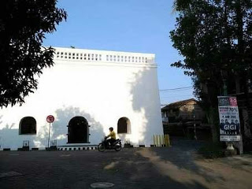
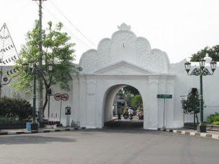

SUGENG RAWUH
ing Kuta Yogyakarta
Filosofi
Jogja bukanlah sebuah kota semata, tapi ia adalah kota yang penuh makna.
Kita bisa mendapati makna tersembunyi, filosofis, dari berbagai hal di Jogja.
Mulai dari baju, pohon yang ditanam di pinggir jalan, bangunan keraton hingga tata ruangnya.
Jogja adalah kota yang penuh makna.
Makna filosofis yang berlandaskan pada kearifan lokal dan nilai-nilai budaya.
Dari aspek personal hingga kolektif ada maknanya. Misalnya saja soal pakaian.
Bagi masyarakat Jawa umumnya, dan Jogja khususunya, pakaian bukan semata soal penutup badan.
Bukan hanya soal bagus. Bukan semata soal fashion, tapi pakaian juga punya makna filosofis.
Seperti kata pepatah itu, "Aji Ning Rogo Soko Busono lan Aji Ning Ati Soko Lathi.”Nah, yang menarik.
Urusan filosofis ini ternyata juga ada dalam tata ruang.
1. Krapyak

gambaran tempat asal roh-roh. Di sebelah utaranya terletak kampung Mijen,
berasal dari kata wiji (benih), jalan lurus ke utara, di kanan kini dihiasi pohon Asem dan Tanjung,
menggambarkan kehidupan sang anak yang lurus, bebas dari rasa sedih dan cemas, wajahnya nengsemaken
serta di sanjung-sanjung selalu.
2. Plengkung Nirbaya

Plengkung Nirbaya (Gading). Plengkung ini menggambarkan periode sang anak menginjak dari
masa kanak-kanak ke masa pra puber. Dimana sifatnya masih nengsemaken (pohon Asem)
dan juga suka menghias diri (nata sinom).
3. Alun-alun Selatan

Alun-alun selatan. Disini terdapat 2 pohon beringin yang disebut Wok. Disekitar alun-alun ini
terdapat 5 buah jalan yang bersatu sama lain menunjukkan panca indera, tanah berpasir artinya
belum teratur, lepas satu sama lain. Apa yang ditangkap belum tersatur oleh panca indera.
Keliling alun-alun ditanami pohon Kweni dan pakel artinya sang anak sudah wani (berani karena sudah akil balig)
4. Bangsal Manguntur Tangkil

Bangsal Manguntur Tangkil, sebuah bangsal kecil yang terletak di tratag Sitihinggil.
Jadi sebuah bangsal di dalam bangsal yang mempunyai arti bahwa didalam tubuh kita (wadag) terdapat roh/ jiwa.
Manguntur Tangkil berarti tempat yang tinggi untuk anangkil, yaitu menghadap Tuhan Yang Maha Kuasa
dengan mengheningkan cipta atau bersemedi.
5. Bangsal Kamagangan

Regol Gadung Mlati sampai kemagangan merupakan jalan yang sempit kemudian melebar dan tersang benderang.
Suatu gambaran Anatomis kelahiran sang bayi. Disini bayi kemudian magang (kemagangan) menjadi calon manusia dalam arti sesungguhnya.